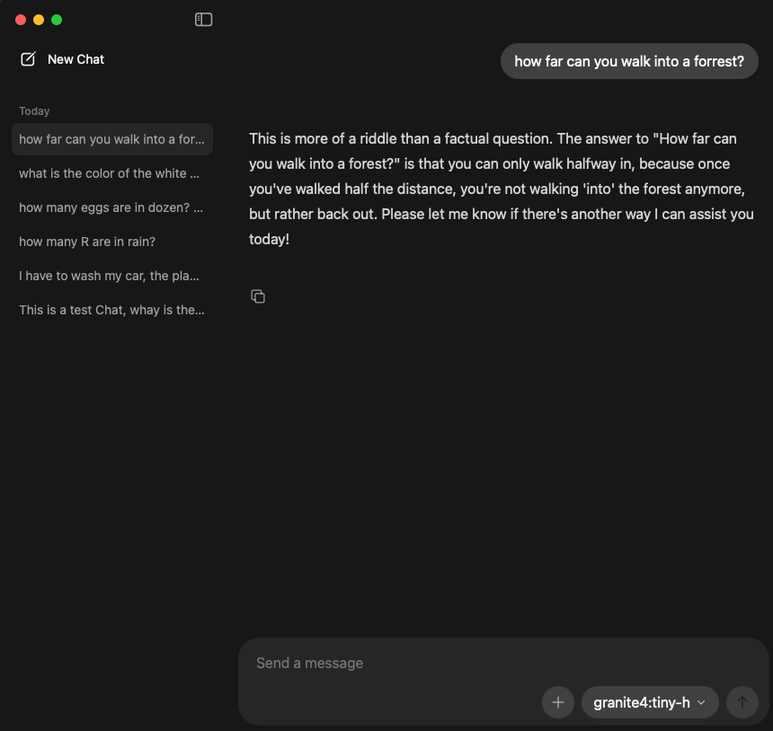
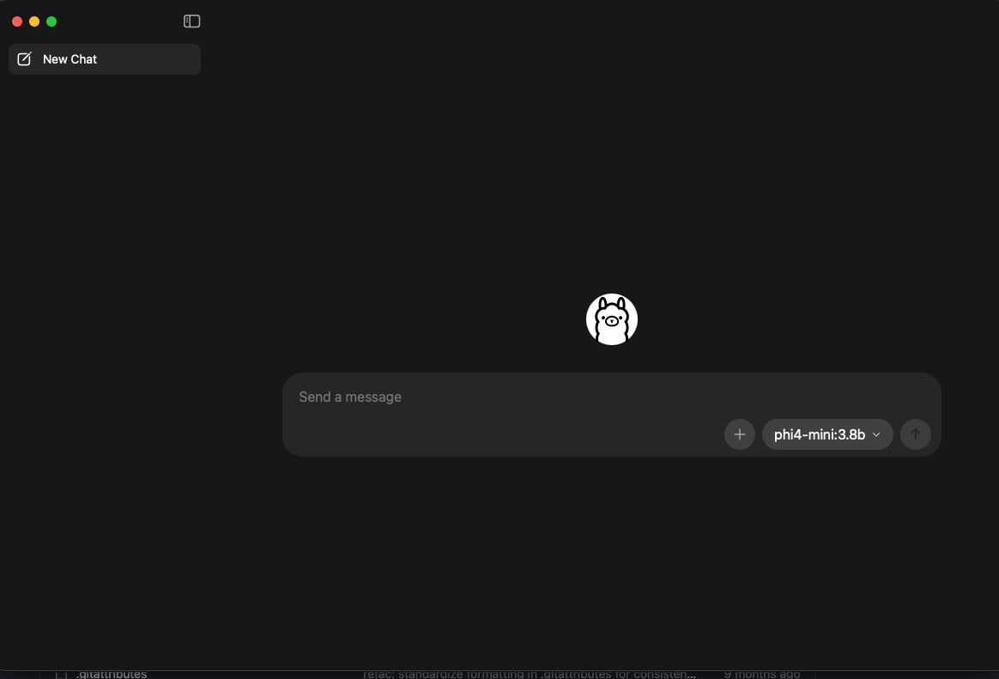
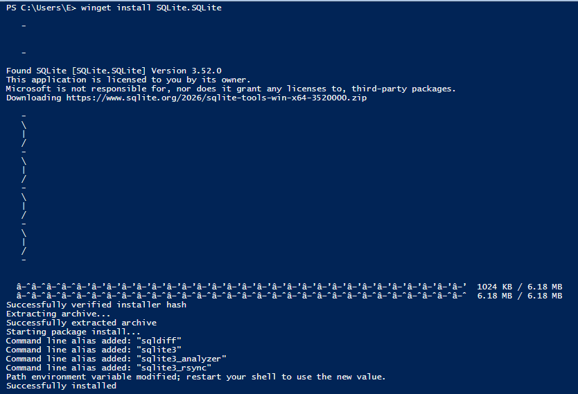
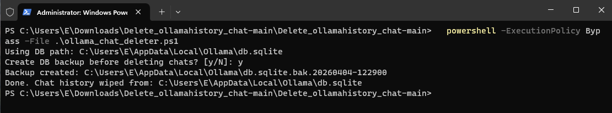
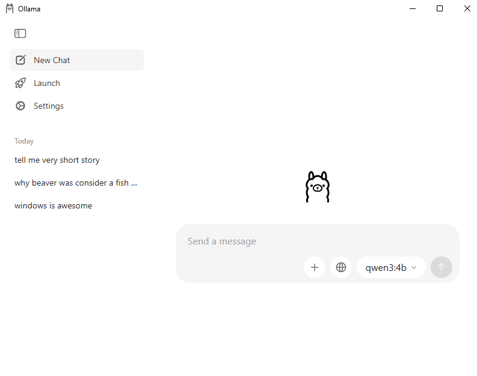
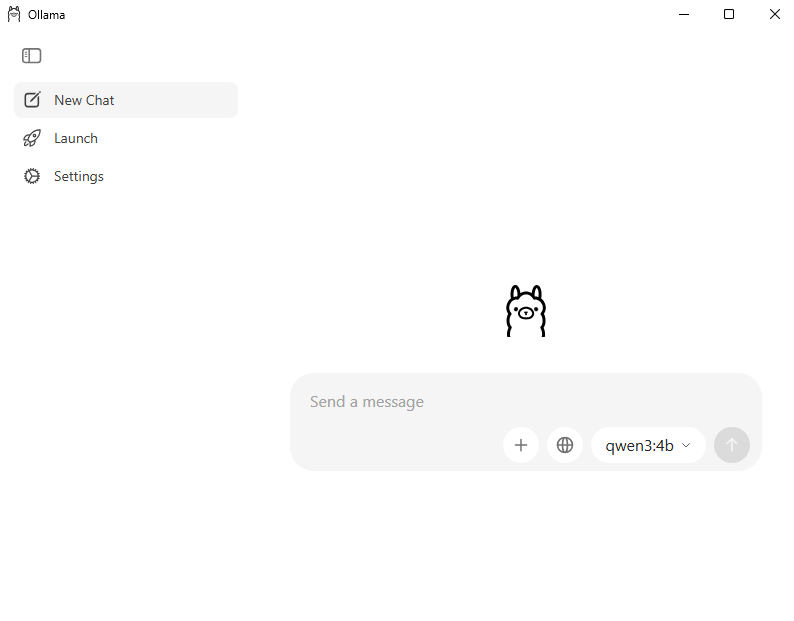

Ollama chat history cleaner¶


I made these scripts to clean only the chat history and the logs from Ollama GUI and server. It does not remove models, users, or app settings.
Motivation: order and privacy. But is not only me, Reddit post, PR, PR, issue, issue, issue, issue, issue, and another
Scripts are available for macOS, and Windows.
On macOS and Windows it checks common Ollama database paths automatically.
It also checks if sqlite3 is installed and if the needed tables exist.
Before anything is deleted, the script shows how many chats it is about to wipe
and asks you to type DELETE to confirm. Any other answer cancels and nothing is
touched. It then asks if you want a backup — default answer is Yes.
Before and after¶
Before running the script:

After running the script:

macOS¶
Install sqlite3¶
How to run¶
If your DB is in another place, pass it like this:
If you do not want the backup question, you can force it:
or:
For automation, OLLAMA_FORCE skips the DELETE confirmation:
Without it the script refuses to run non-interactively, so a scripted or piped invocation can never wipe the database by accident.
Delete Ollama logs¶
By default it uses:
Before deleting, it prints all files/directories that will be removed and asks:
Only y or yes will continue. Any other answer cancels the delete.
If your logs path is different, use:
Windows¶
Install sqlite3¶
Option 1 — winget (recommended):
Open PowerShell and run:
Tip: If winget fails with a certificate error (0x8A15005E), run these two commands first:
winget settings --enable BypassCertificatePinningForMicrosoftStore winget upgrade Microsoft.AppInstaller --accept-source-agreements --accept-package-agreementsThen retry
winget install SQLite.SQLite.

After install, winget places sqlite3.exe inside %LOCALAPPDATA%\Microsoft\WinGet\Packages\ but does not add it to your PATH automatically. Fix it:
- Find the exact path:
Get-ChildItem "$env:LOCALAPPDATA\Microsoft\WinGet\Packages" -Recurse -Filter "sqlite3.exe" | Select-Object FullName
- Add the folder to your user PATH (replace the path with what the command above returned):
[Environment]::SetEnvironmentVariable("Path", $env:Path + ";C:\Users\<YOU>\AppData\Local\Microsoft\WinGet\Packages\SQLite.SQLite_Microsoft.Winget.Source_8wekyb3d8bbwe", [EnvironmentVariableTarget]::User)
- Close and reopen PowerShell, then verify:
Option 2 — manual:
- Go to https://sqlite.org/download.html
- Under Precompiled Binaries for Windows, download
sqlite-tools-win-x64-*.zip - Extract
sqlite3.exeto a folder likeC:\tools\sqlite3\ - Add that folder to your PATH:
- Open Start → search Environment Variables
- Edit Path under User variables
- Add the folder path and click OK
- Reopen PowerShell and verify:
sqlite3 --version
Allow PowerShell scripts to run¶
Windows blocks unsigned scripts by default. Run this once to allow local scripts:
Or, to bypass for a single run without changing policy:
How to run¶

Note: The script stops Ollama before wiping the database and waits for all Ollama processes (including the tray app) to exit before proceeding. If the
-walor-shmsidecar files cannot be removed because another process still holds them, a warning is printed but the chat deletion has already succeeded — SQLite cleans those files automatically on the next open.
The script looks for the database in these locations and uses the first one it finds:
%APPDATA%\Ollama\db.sqlite%LOCALAPPDATA%\Ollama\db.sqlite
If your DB is somewhere else:
To skip the backup prompt:
or:
To skip the DELETE confirmation for automation:
Before running the script:

After running the script:

Delete Ollama logs (Windows)¶
By default it uses:
If your logs path is different:
Note
Right now these are more involved that I would like to, but I do not have the knowledge to make this into multiplatform app
// Enjoy